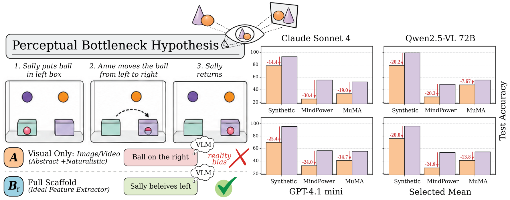
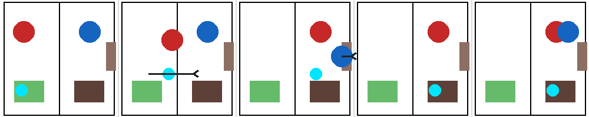

Visual only
Image + question
1 Texas A&M University2 University of Bonn3 Lamarr Institute4 Hamad Bin Khalifa University
The same question. The same reasoning task.
A different view of the world.

The finding
Vision-language models can solve false-belief problems in text, yet struggle when the same problems are presented visually. We test whether this gap comes from perceptual extraction or belief reasoning by holding the task constant and varying the information supplied.
Across abstract 2D panels and naturalistic scenes from MuMA-ToM and MindPower, ground-truth descriptions substantially close the gap. Automatic parsers—including strong visual describers—do not. Our results point to a perceptual bottleneck: models need better representations of who was present, what changed, and who could observe it.
Controlled comparison
Each condition changes the available perceptual information while preserving the question.
Image + question
Image + parser output
Image + ground-truth facts
Image + full description
Description + question
Perceptual Contribution Ratio
How much of the visual-to-text gap
does the scaffold recover?
Evidence across models
Explore the paper’s results. Each view uses the seven-model paper panel.
500 probes per model · Table 3
Bp is not defined for MuMA-ToM. MindPower uses layer-averaged semantic scores rather than binary answer accuracy. See the paper for the scoring protocol.
Abstract 2D benchmark
20 templates, 50 variants each. Images, questions, ground-truth descriptions, and scoring aliases are included.
300 probes · 6 templates
200 probes · 4 templates
500 probes · 10 templates

Expected answer:
From paper to practice
Saved responses and per-response scores are bundled with the code. One command recomputes the tables and checks their agreement with the paper.
Read the reproduction guide ↗python scripts/reproduce.py
Writes CSV tables and a numerical verification report.
Use & cite
If you use the code, dataset, or findings, please cite the paper.
@inproceedings{barhdadi2026perception,
title = {Perception, Not Reasoning, Limits Visual Theory of Mind},
author = {Barhdadi, Mohamed Rayan and Wasim, Syed Talal and Gall, Juergen
and Serpedin, Erchin and Kurban, Hasan},
booktitle = {Advances in Neural Information Processing Systems},
year = {2026}
}